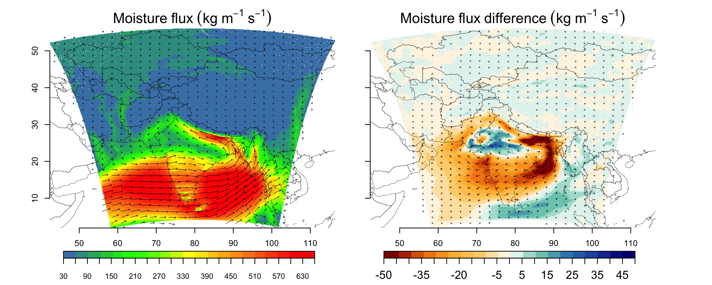
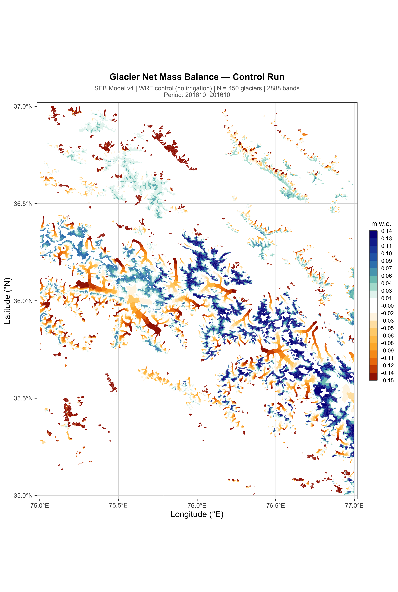

Tika Ram Gurung
Ph.D. Candidate in Climatology & Meteorology
Department of Earth and Atmospheric Sciences, University of Nebraska-Lincoln
"Climate and cryosphere scientist with expertise in glacier mass balance, permafrost, high mountain hydroclimate, and heatwaves, now integrating numerical modeling and in-situ field data to understand how soil moisture, irrigation, and moisture transport shape hydroclimate variability from Himalayan glaciers to regional scales."
I am a climate scientist and Ph.D. candidate at the University of Nebraska-Lincoln, specializing in land/cryosphere-atmosphere processes and regional climate modeling. My research integrates numerical modeling and large datasets to understand how human factors such as irrigation interact with natural climate systems in South Aisa and High Mountain Asia.
Prior to my PhD, I spent several years as a Research Associate and Cryosphere Analyst at ICIMOD, leading glacier monitoring expeditions across high altitude glaciers in the Central Himalaya.

Irrigation & South Asian Hydroclimate
Quantifying how large-scale irrigation in the Indo-Gangetic Plain alters moisture flux and precipitation patterns across South Asia.

Irrigation & Glacier Dynamics
Investigating the cascading effects of irrigation-driven climate modification on glacier mass balance in High Mountain Asia.